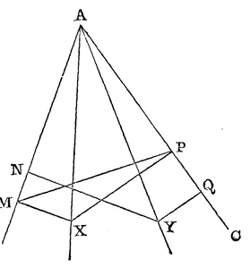
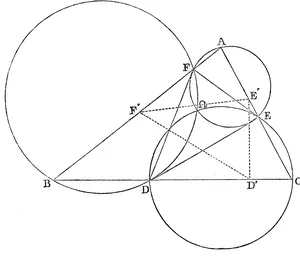
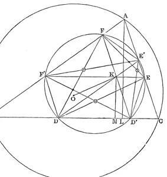
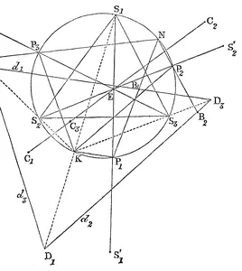
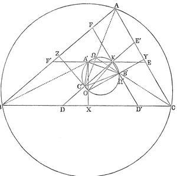
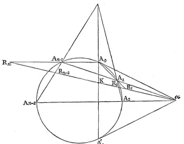
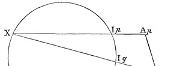
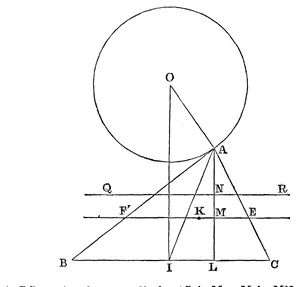

Supplementary Chapter: Recent Elementary Geometry of the Triangle¶
Recent Elementary Geometry of the Triangle (pp. 165–248, Folios 0191–0274)
The Supplementary Chapter on the Recent Elementary Geometry of the Triangle was added by John Casey in the fourth edition (1886) of his Sequel and substantially expanded in the fifth (1888) and sixth (1892) editions. It marks the first comprehensive textbook synthesis in the English-speaking world of the vibrant French, Belgian, and British geometric revival inaugurated by Émile Lemoine at the 1873 Lyon Congress.
Across eight canonical sections, Casey develops the complete modern triangle and polygon canon: isogonal and isotomic conjugates, antiparallels, and symmedians (Section I); two figures directly similar, Brocard’s points $\Omega, \Omega'$, and Brocard angle $\omega$ (Section II); Lemoine’s First Circle, the Cosine Circle, Tucker’s family, and Taylor’s Circle (Section III); the general theory of three directly similar figures and their Circle of Similitude (Section IV); the seven-point Brocard Circle, Brocard’s First Triangle, and Casey’s similar-figures proof of Feuerbach’s theorem (Section V); Casey’s theory of cyclic harmonic polygons (Section VI); associated figures, Steiner’s point $X(99)$, and Tarry’s point $X(98)$ (Section VII); and 158 Miscellaneous Exercises crowning the treatise with Neuberg’s circles and de Longchamps’ point and circle $X(20)$ (Section VIII).
Outline of Sections¶
Section I — Isogonal & Isotomic Conjugates, Antiparallels & Symmedians (pp. 165–173)¶

Supplementary Chapter, Section I: Isogonal & Isotomic Conjugates, Antiparallels & Symmedians (1888 English)
Section I, Proposition 1 (Isogonal Pairs & Pedal Circle). If from two points $X, Y$ on two lines $AX, AY$, which are isogonal conjugates with respect to a given angle $BAC$, perpendiculars $XM, YN, XP, YQ$ be drawn to its sides; then—
The rectangle $XM \cdot YN = XP \cdot YQ$.
The points $M, N, P, Q$ are concyclic.
$MP$ is perpendicular to $AY$, and $NQ$ to $AX$.
Six-Point Pedal Circle Theorem (Prop. 2). If three lines drawn from the vertices A, B, C of △ABC concur at a point P, their three isogonal conjugates concur at its isogonal conjugate Q, and the six pedal projections X, Y, Z, X′, Y′, Z′ upon the sides lie upon the common Pedal Circle (Mp X) centered at Mp $= \operatorname{midpoint}(P, Q)$.
Supplementary Chapter, Section I Summary — Isogonal Conjugates & Symmedians
Section I opens Casey’s Supplementary Chapter on the Recent Elementary Geometry of the Triangle with the projective-metric foundations of conjugates, antiparallels, and symmedians:
Supplementary Chapter, Section I Notes — Grebe, Lemoine & d’Ocagne
Section I opens Casey’s systematic codification of triangle conjugation. While Steiner and Catalan noted special cases of pedal concurrency earlier in the nineteenth century, the general synthetic theory of isogonal conjugates and their six-point common pedal circle forms the foundation of the 1873–1886 Franco-Belgian geometry movement.
Section II — Two Figures Directly Similar, Brocard Points & Brocard Angle (pp. 173–178)¶

Supplementary Chapter, Section II: Two Figures Directly Similar & Brocard Points (1888 English)
Section II, Propositions 3–5 (:person:`Brocard’s <brocard>` :term:`Points <brocard-points>` $\Omega, \Omega'$ & :term:`Brocard Angle <brocard-angle>` $\omega$). In any triangle $\triangle ABC$:
The three circles described on $AB$ tangent to $BC$ at $B$, on $BC$ tangent to $CA$ at $C$, and on $CA$ tangent to $AB$ at $A$ concur at a unique interior point $\Omega$ (the First Brocard Point) such that
$$ \angle \Omega AB = \angle \Omega BC = \angle \Omega CA = \omega. $$
Cyclically reversing orientation, the three circles tangent at $A, B, C$ in the opposite sense concur at the Second Brocard Point $\Omega'$ (isogonal conjugate of $\Omega$) with the same common acute angle $\angle \Omega' BA = \angle \Omega' CB = \angle \Omega' AC = \omega$.
The Brocard Angle $\omega$ satisfies the fundamental cotangent and cosecant identities:
$$ \cot \omega = \cot A + \cot B + \cot C = \frac{a^2 + b^2 + c^2}{4\Delta}, \qquad \csc^2 \omega = \csc^2 A + \csc^2 B + \csc^2 C, $$
with sharp upper bound $\omega \le 30^\circ$ (equality iff $\triangle ABC$ is equilateral).
Supplementary Chapter, Section II Summary — Spiral Similarity & Brocard Points
Section II establishes the synthetic theory of two directly similar plane figures and derives the Brocard Points $(\Omega, \Omega')$ as canonical double points:
Supplementary Chapter, Section II Notes — Crelle, Jacobi, Brocard & ETC
Although August Leopold Crelle (1816) and Carl Gustav Jacob Jacobi (1825) briefly encountered the equi-angle points $\Omega, \Omega'$, the systematic revival began with Henri Brocard in the Nouvelle Correspondance Mathématique (1876–1879) and his landmark 1881 Algiers memoir (AFAS Alger, 1881). Casey derives both points directly from his Section II theory of two figures directly similar (ff. 0199–0203), turning spiral similarity into a pure Euclidean tool.
Section III — Three Similar Figures: Lemoine, Cosine, Tucker & Taylor Circles (pp. 179–188)¶

Supplementary Chapter, Section III: Lemoine, Cosine, Tucker & Taylor Circles (1888 English)
Section III, Proposition 1 (:term:`Lemoine’s First Circle / Triplicate-Ratio Circle <lemoine-circle>`). If through the Symmedian Point K three straight lines [parBC], [parCA], [parAB] be drawn parallel respectively to the sides [BC], [CA], [AB], meeting the sides in six points D1, D2 on $BC$, E1, E2 on $CA$, and F1, F2 on $AB$:
All six points lie upon a single circle—Lemoine’s First Circle (Ml D1);
Its centre Ml ($X(182)$) is the midpoint of the segment joining the Circumcentre O and Symmedian Point K;
The three chords $|D_1 D_2|, |E_1 E_2|, |F_1 F_2|$ cut off upon the sides $BC, CA, AB$ are directly proportional to the cubes of those sides ($a^3 : b^3 : c^3$, hence :person:`Tucker’s <tucker>` name “Triplicate-Ratio Circle”).
Supplementary Chapter, Section III Summary — Lemoine, Cosine, Tucker & Taylor Circles
Section III unifies the classical six-point triangle circles as specializations of Tucker’s family, generated by intersecting $\triangle ABC$ with a homothetic triangle $\triangle A'B'C'$ centered at the Symmedian Point $K = X(6)$:
Supplementary Chapter, Section III Notes — Lemoine, Tucker & Taylor
Émile Lemoine discovered both the First Lemoine Circle and the Cosine Circle in his 1873 Lyon Congress address (Note sur un point remarquable). Ten years later, Robert Tucker independently rediscovered the First Circle in QJM 19 (1883) under the name Triplicate-Ratio Circle (highlighting the $a^3 : b^3 : c^3$ side-chord law) before realizing both circles sit inside a continuous one-parameter family centered on the Brocard diameter $OK$.
Section IV — General Theory of a System of Three Similar Figures (pp. 189–194)¶

Supplementary Chapter, Section IV: General Theory of a System of Three Similar Figures (1888 English)
Supplementary Chapter, Section IV Summary — General Theory of Three Similar Figures
Section IV develops Casey and Neuberg’s abstract theory of three directly similar plane figures $F_1, F_2, F_3$:
Supplementary Chapter, Section IV Notes — Neuberg, Casey & Three Similar Figures
In the 1880s, Joseph Neuberg (Liège, Mémoire sur le tétraèdre and Mathesis) and William S. M’Cay (Trinity College Dublin, Transactions of the Royal Irish Academy) elevated Brocard geometry from ad-hoc triangle identities into a general Euclidean transformation theory for systems of three directly similar figures. John Casey systematically unified their results across Section IV (ff. 0215–0220) so that the Brocard Circle, M’Cay circles, and Feuerbach’s theorem fall out as single-step specializations.
Section V — Brocard’s Circle, First Triangle & Feuerbach’s Theorem (pp. 194–204)¶

Supplementary Chapter, Section V: Brocard’s Circle, First Triangle & Feuerbach’s Theorem (1888 English)
Section V, Proposition 1 (:term:`The Seven-Point Brocard Circle <brocard-circle>` & Brocard’s First Triangle). Construct the circle (Ml O) having the segment joining the Circumcentre O and Symmedian Point K as diameter (centered at Ml $= X(182)$ of radius $\frac{1}{2}|OK| = \frac{1}{2} R \sqrt{1 - 3\tan^2\omega}$*). Let the pairs of Brocard rays* [B Om1] and [C Om2] meet at A1, [C Om1] and [A Om2] at B1, and [A Om1] and [B Om2] at C1, forming Brocard’s First Triangle △A1B1C1. Then:
All seven points O, K, Ω, Ω′, A1, B1, C1 lie concyclically upon the Brocard Circle (Ml O);
Ω and Ω′ are symmetric across the diameter [O K] with $\angle \Omega O K = \angle \Omega' O K = \omega$ and $\angle O \Omega K = \angle O \Omega' K = 90^\circ$;
Brocard’s First Triangle △A1B1C1 is inversely similar to △ABC with similarity ratio $\sin \omega$ and shares the same Centroid $G = X(2)$ as $\triangle ABC$!
Supplementary Chapter, Section V Summary — Brocard’s Circle & Feuerbach’s Theorem
Section V applies the abstract machinery of Section IV to prove the two crowning circle-concurrency theorems of modern triangle geometry:
Supplementary Chapter, Section V Notes — Brocard, Neuberg, M’Cay & Feuerbach
On f. 0221 (p. 195), Casey explicitly credits Captain H. Brocard (Chef de Bataillon), noting his papers in Nouvelle Correspondance Mathématique, tomes III–VI (1876–1879), and his addresses before the Association Française pour l’Avancement des Sciences at the Algiers (1881, AFAS Alger, 1881) and Rouen (1883) Congresses, subsequently expanded by Neuberg, M’Cay, and Tucker.
Section VI — Theory of Harmonic Polygons (pp. 205–222)¶

Supplementary Chapter, Section VI: Theory of Harmonic Polygons (1888 English)
Section VI, Proposition 5 (Harmonic Mean Locus of the Polar of $K$). If a transversal through the symmedian point $K$ cuts the sides of the polygon in the points $R_1, R_2, \dots, R_n$, and if a point $P$ be taken on it so that
$$ \frac{1}{KR_1} + \frac{1}{KR_2} + \dots + \frac{1}{KR_n} = \frac{n}{KP}, $$
the locus of $P$ is the polar of $K$ with respect to the circumcircle.
Supplementary Chapter, Section VI Summary — Theory of Harmonic Polygons
Section VI records John Casey's original 1886 generalization of Lemoine–Brocard geometry from $n = 3$ triangles to arbitrary cyclic $n$-gons:
Supplementary Chapter, Section VI Notes — Neuberg (1885) & Casey (1886)
After Joseph Neuberg introduced harmonic quadrilaterals ($AB\cdot CD = BC\cdot DA$) in Mathesis 5 (1885), John Casey immediately generalized the entire Lemoine–Brocard–Tucker apparatus to arbitrary cyclic Harmonic $n$-gons in his landmark memoir On the Harmonic Section of Polygons (Proceedings of the Royal Irish Academy, 1886).
Section VII — General Theory of Associated Figures (pp. 223–230)¶

Supplementary Chapter, Section VII: General Theory of Associated Figures (1888 English)
Supplementary Chapter, Section VII Summary — Associated Figures & Tarry’s Polygons
Section VII abstracts Section IV (three similar figures) and Section VI (harmonic polygons) to an arbitrary $n$-tuple of directly similar plane figures pivoted on $n$ invariable points $I_1, \dots, I_n$ concyclic on the common Circle of Similitude $Z$:
Supplementary Chapter, Section VII Notes — Neuberg, Tarry, Simmons & M’Cay
On f. 0249 (p. 223), Casey prints a 1886 remark by Prof. W. S. M’Cay (Trinity College Dublin, appended to Tucker’s paper) anticipating harmonic-polygon extensions, and credits MM. Joseph Neuberg and Gaston Tarry (AFAS Nancy, 1886) for Prop. 2 and Rev. T. C. Simmons (Proc. LMS, April 1887) for the enunciation of Prop. 7, claiming independent original priority for the remaining propositions of Section VII.
Section VIII — Miscellaneous Exercises: Neuberg, Steiner, Tarry & de Longchamps (pp. 231–248)¶

Supplementary Chapter, Section VIII: Miscellaneous Exercises (1888 English)
Supplementary Chapter, Section VIII Summary — Neuberg’s & de Longchamps’ Circles
Section VIII crowns the Sequel to Euclid with 158 research exercises spanning modern triangle geometry:
Supplementary Chapter, Section VIII Notes — Neuberg, M’Cay & de Longchamps
Across the 158 exercises of Section VIII, Casey draws extensively from Joseph Neuberg (on Neuberg circles and co-symmedian triangles), Prof. W. S. M’Cay (co-symmedian perspective lines, Ex. 13), Émile Lemoine, and Gaston Tarry, bridging Irish, British, French, and Belgian periodicals (Mathesis, Messenger of Mathematics, Educational Times) into a unified problem set.